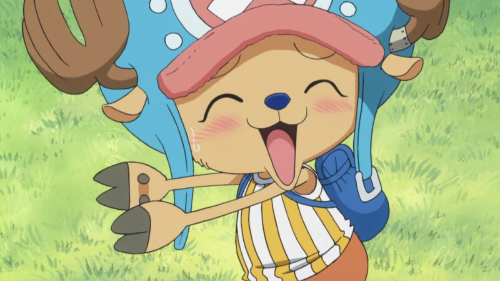
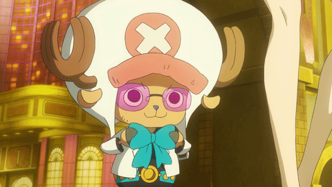
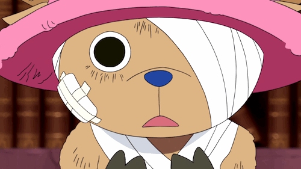

Chopper
Chopper: O Renegado Médico com Coração de Herói
Tony Tony Chopper é um personagem de "One Piece", conhecido por ser o médico da tripulação dos Chapéus de Palha. Ele é uma rena que comeu a Hito Hito no Mi, uma Akuma no Mi que lhe concedeu habilidades humanas. Desde então, Chopper pode falar, andar sobre duas patas e realizar tarefas complexas, como praticar medicina. Sua aparência fofa e sua personalidade doce fazem dele um dos membros mais queridos da tripulação.
Apesar de sua aparência ingênua, Chopper é um médico brilhante. Ele passou anos estudando medicina com a Dra. Kureha, uma médica excêntrica e altamente qualificada. Com seu conhecimento vasto, ele trata ferimentos e doenças com uma habilidade que rivaliza com a de médicos experientes. Chopper é movido por um profundo desejo de curar os outros e busca criar uma cura universal para todas as doenças, inspirando-se no sonho de seu mentor, o Dr. Hiluluk.

hopper tem uma personalidade muito sensível e é frequentemente inseguro sobre si mesmo. Ele se preocupa profundamente com o que os outros pensam dele, o que o faz facilmente envergonhado ou emotivo. No entanto, ele também tem um lado ferozmente leal e corajoso, especialmente quando seus amigos estão em perigo. Ele enfrenta seus medos para proteger aqueles que ama, mostrando que, apesar de suas dúvidas, ele tem a força de um verdadeiro guerreiro.
Uma das habilidades mais notáveis de Chopper é o Rumble Ball, uma droga que ele desenvolveu para ampliar suas transformações. Normalmente, Chopper pode se transformar em várias formas que combinam suas habilidades humanas e de rena, mas com a Rumble Ball, ele ganha novas transformações temporárias que aumentam sua força e habilidades de combate. No entanto, o uso excessivo desta droga tem efeitos colaterais perigosos, o que mostra a disposição de Chopper em arriscar sua própria vida pelo bem da tripulação.

Além de suas habilidades médicas e de combate, Chopper traz um forte senso de inocência e pureza para a tripulação dos Chapéus de Palha. Sua capacidade de ver o bem nas pessoas, mesmo em situações difíceis, frequentemente ajuda seus companheiros a manterem a esperança e o foco em seus objetivos. Ele é um pilar de suporte emocional para seus amigos, sempre disposto a ajudar com palavras de encorajamento e bondade.
Chopper também tem um forte laço com a natureza, devido à sua origem como uma rena. Ele respeita profundamente o mundo natural e frequentemente se entristece ao ver a destruição da natureza causada por outros. Esse respeito pela vida e pela natureza se reflete em sua abordagem à medicina, onde ele prefere métodos que causem o mínimo de dano possível ao corpo humano e ao ambiente

Por fim, Tony Tony Chopper é um personagem multifacetado que combina inocência, bravura e grande habilidade médica. Ele é mais do que apenas o "mascote" da tripulação; ele é um membro vital cuja bondade e determinação tocam todos ao seu redor. Chopper, com seu coração puro e espírito inabalável, prova que a verdadeira força não está no tamanho ou na aparência, mas na vontade de proteger e cuidar dos outros.